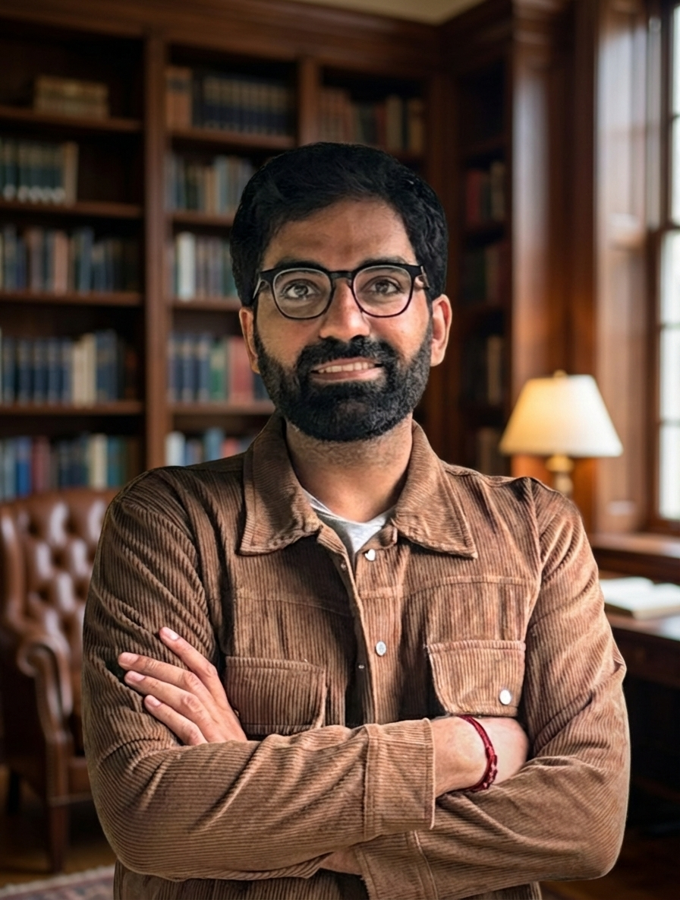

utsav singh
I am currently a Postdoctoral Researcher at the University of Central Florida (UCF), working under Dr. Mubarak Shah and Dr. Amrit Singh Bedi, a position I joined in June 2026. I recently completed my PhD in Computer Science and Engineering from IIT Kanpur, advised by Dr. Vinay P. Namboodiri and Dr. Sunil E. Simon. Prior to this, I spent a productive six months as a Visiting Research Scholar at UCF, working under the mentorship of Dr. Mubarak Shah and Dr. Amrit Singh Bedi, where I worked on leveraging preference-based learning for robotic control. Previously, I received my M.Tech from IIT Kanpur.
I am interested in tackling the core challenges of sample efficiency and long-horizon decision making in autonomous agents. My overarching goal is to design autonomous systems that can perform complex reasoning to solve long-horizon tasks, rather than merely memorizing patterns. My current focus is vision-language-action models and their efficient adaptation across different robot embodiments.
Outside the lab, I am passionate about endurance sports, and I have completed
Ironman 70.3, the Khardung La Challenge (72km ultra marathon), several marathons and high-altitude treks. I am also a trained Hindustani Classical vocalist.
news
| July 16, 2026 |
, I have won the Manas Mandal Best Thesis Award from CSE Deptt., IIT Kanpur. |
| Jan 25, 2026 |
DIPPER, our Direct Preference Optimization based approach is accepted at ICLR 2026. |
| Nov 8, 2025 |
CRISP, our HRL approach to leverage demonstrations for robotic control is accepted at AAAI 2026. |
| Jan 22, 2025 |
PEAR, our hierarchical RL based approach is accepted at ICLR 2025. |
| Aug 15, 2024 |
I have joined UCF as a Visiting Research Scholar under Dr. Mubarak Shah
and Dr. Amrit Singh Bedi. |
| May 1, 2024 |
PIPER, our preference-based learning approach for robotics control is accepted at ICML 2024. |
publications
(* denotes equal contribution)
-
Direct Preference Optimization for Primitive-Enabled Hierarchical RL: A Bilevel Approach
Utsav Singh, Souradip Chakraborty, Wesley A. Suttle, Brian M. Sadler, Derrik E. Asher, Anit Kumar Sahu, Mubarak Shah, Vinay P. Namboodiri, Amrit Singh Bedi
Accepted at ICLR 2026
paper
| arxiv
| cite
-
CRISP: Curriculum Inducing Primitive Informed Subgoal Prediction for Hierarchical Reinforcement Learning
Utsav Singh, Vinay P. Namboodiri
Accepted at AAAI 2026
paper
| arxiv
| code
| cite
-
On the Sample Complexity Bounds of Bilevel Reinforcement Learning
Mudit Gaur, Utsav Singh, Amrit Singh Bedi, Raghu Pasupathy, Vaneet Aggarwal
Accepted at NeurIPS 2025
paper
| arxiv
| cite
-
PEAR: Primitive Enabled Adaptive Relabeling for boosting Hierarchical Reinforcement Learning
Utsav Singh, Vinay P. Namboodiri
Accepted at ICLR 2025
paper
| arxiv
| cite
-
PIPER: Primitive-Informed Preference-based Hierarchical Reinforcement Learning via Hindsight Relabeling
Utsav Singh, Wesley A. Suttle, Brian M. Sadler, Vinay P. Namboodiri, Amrit Singh Bedi
Accepted at ICML 2024
paper
| arxiv
| code
| cite
-
Reinforcement Learning with Textual Feedback via Natural Language Actor Critic
Utsav Singh*, Sidhaarth Sredharan Murali*, Souradip Chakraborty, Amrit Singh Bedi
Submitted at ICML 2026
-
LGR2: Language Guided Reward Relabeling for Accelerating Hierarchical Reinforcement Learning
Utsav Singh, Pramit Bhattacharyya, Vinay P. Namboodiri
Submitted at IROS 2026
paper
| arxiv
| cite
-
Mitigating Reward Hacking in Inference-Time Alignment of T2I Diffusion Models via Distributional Regularization
Kevin Zhai, Utsav Singh, Anirudh Thatipelli, Souradip Chakraborty, Anit Kumar Sahu, Furong Huang, Amrit Singh Bedi, Mubarak Shah
Submitted at ICML 2026
paper
| arxiv
| cite
-
Repair Aware Forgetting: An Iterative Approach to Unlearning in T2I Diffusion Models
Soumik Ghosh, Kevin Zhai, Utsav Singh, Souradip Chakraborty, Amrit Singh Bedi, Mubarak Shah
Submitted at ICML 2026